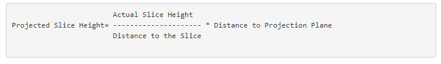
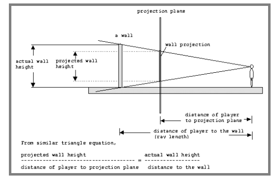

Step 5 : DRAW THE WALLS
In the previous steps, 320 rays are casts, when each ray hits a wall, the distance to that wall is computed. Knowing the distance, the wall slice can then be projected onto the projection plane. To do this, the height of the projected wall slice need to be found. It turns out that this can be done with a simple formula:


Our world consist cubes, where the dimension of each cube is 64x64x64 units, so the wall height is 64 units. We also already know the distance of the player to the projection plane (which is 277). Thus, the equation can be simplified to:
Projected Slice Height = 64 / Distance to the Slice * 277
The wall can be viewed as collection of 320 vertical lines (or 320 wall slices).
Instead of tracing a ray for every pixel on the screen, we can trace for only every vertical column of screen. The ray on the extreme left (60 degree) of the FOV (Field Of Vision) will be projected onto column 0 of the projection plane, and the right most ray (0 degree) will be projected onto column 319 of the projection plane.
/* Draw the walls from a player
defined by its coordinates
and a point of view (where he is watching)
*/
drawWalls : function(xunitplayer,yunitplayer,POVrad){
//We get all the distances from the player
//to the wall
this.ComputeBestWallIntersections(xunitplayer,yunitplayer,POVrad,0,0)
//For all the column we draw a vertical line
// The column 0 is equal to the ray of 60 degree
// of the FOV
//Reversely the table distancesToWalls
//contains ray distances for ray starting from
// 0 degree to 60 degree
var y=this.height;
for (var x=0;x < this.width;x++){
//distance to the wall
var d=this.distancesToWalls[x];
//column number
column=this.width-x;
//Height of the projected height
wallheight=this.DistanceProjectionPlane*this.wallsize/d;
//Let's draw a black line from bottom to the top
this.drawLine(column,y,column,y-wallheight);
}
},
SHADING
When an object is farther away from the viewer, the object should appear less/more bright. To accomplish this, a shading effect is needed.
Intensity = Object Intensity/Distance * Multiplier
Here, Object Intensityis the intensity that the programmer wish to use (it should be between 0 and 1). This is actually quite simple conceptually. It basically says that as objects gets farther, the intensity of the object gets smaller. Multiplier is a number to prevent Intensity from falling off to fast with distance.
ShadingGrey : function(greylevel,distance){
// Add simple shading so that farther wall slices appear darker.
// 750 is arbitrary value of the farthest distance.
dist=Math.floor(distance);
var greyhaded=greylevel-(dist/750.0)*255.0;
// don't allow it to be too dark
if (greyhaded < 0)
greyhaded=0;
if (greyhaded>255)
greyhaded=255;
greyhaded=Math.floor(greyhaded);
var cssColor=this.rgbToHexColor(greyhaded,greyhaded,greyhaded);
return cssColor
},
Draw wall in the center of the projection plane
For example, suppose the ray at column 200 hits a wall slice at distance of 330 units. The projection of the slice will be 64 / 330 * 277 = 54 (rounded up).
Since the center of the projection plane is defined to be at 100. The middle of the wall slice should appear at this point. Hence, the top position where the wall slice should be drawn is 100-27=73. (where 27 is one half of 54). Finally, the projection of the slice will look something like the next
/* Draw the walls from a player
defined by its coordinates
and a point of view (where he is watching)
*/
drawWalls : function(xunitplayer,yunitplayer,POVrad,shading){
//We get all the distances from the player
//to the wall
this.ComputeBestWallIntersections(xunitplayer,yunitplayer,POVrad,0,0)
//For all the column we draw a vertical line
// The column 0 is equal to the ray of 60 degree
// of the FOV
//Reversely the table distancesToWalls
//contains ray distances for ray starting from
// 0 degree to 60 degree
var y=this.height;
for (var x=0;x<this.width;x++){
//distance to the wall
var d=this.distancesToWalls[x];
//column number
var column=this.width-x;
//Height of the projected height
var wallheight=this.DistanceProjectionPlane*this.wallsize/d;
//Half of the height
var halfwallheight=wallheight/2;
//Drawing will start from the top
var ystart=this.CenterProjectionPlaneY-halfwallheight;
//Drawing will enf to the bottom
var yend=this.CenterProjectionPlaneY+halfwallheight;
if(shading==1){
var cssColor=this.ShadingGrey(255,d);
}
this.drawLine(column,ystart,column,yend,cssColor);
}
},
Draw Filled Rectangle
Lines are very thin. Drawing vertical lines can create some overlays effect.
It is better to draw a Filled Rectangle as follows:
this.drawFillRectangle(column,ystart,1,yend-ystart,cssColor);
Next: Step 6: Mini map
step6.html
Back: Step 4
step4.html